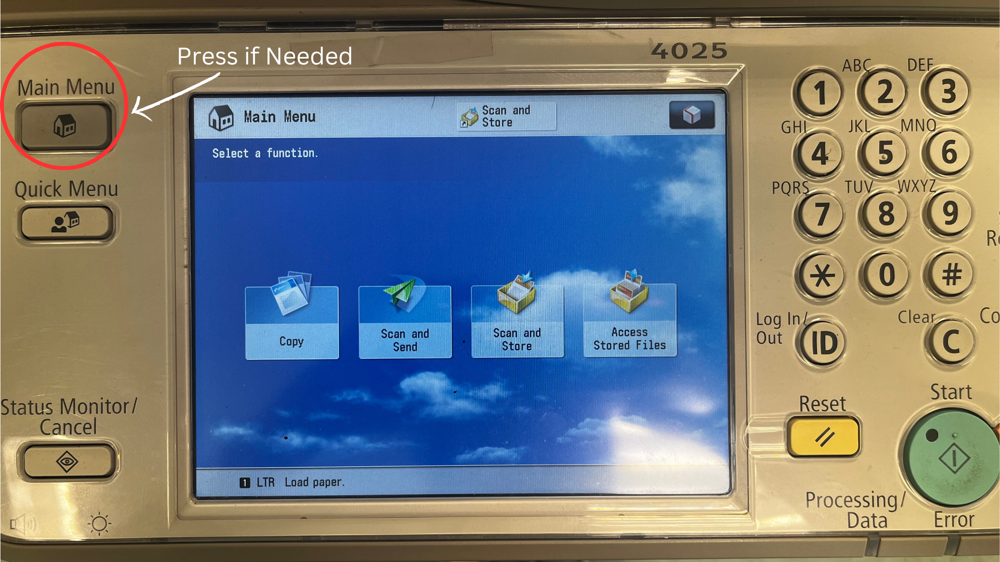

The document scanner is located under the top block of the printer. If you need help locating it, look for the line on the printer that goes right above the touchscreen. The line goes all the way around the perimeter of the printer and can be lifted to expose the scanner.
Lift the top of the printer and place your document on the clear screen.
Align the top left corner of your document with the red arrow.
Figure 1. As Seen Here:
Close the top of the printer.
Swipe your card with the black bar facing up through the slot on the right end of the console.
When the console displays 'Select use:', press F2. This will kick-start the copying process.
The touchscreen on the printer should activate like so:Figure 2. Main Menu Screen:
If the screen displays a different image, press MAIN MENU.
Tap 'COPY.'
Confirm you chosen settings and press the green 'START' button to the right of the touchscreen.
Along the bottom of the screen, the words 'Copy - Printing...' should appear:Figure 3. Copy Pop-Up Screen:
Wait for your job to copy.
You may now retrieve your copies. Remove the original document from the scanner and press F3 on the Equitrac console to end your session.